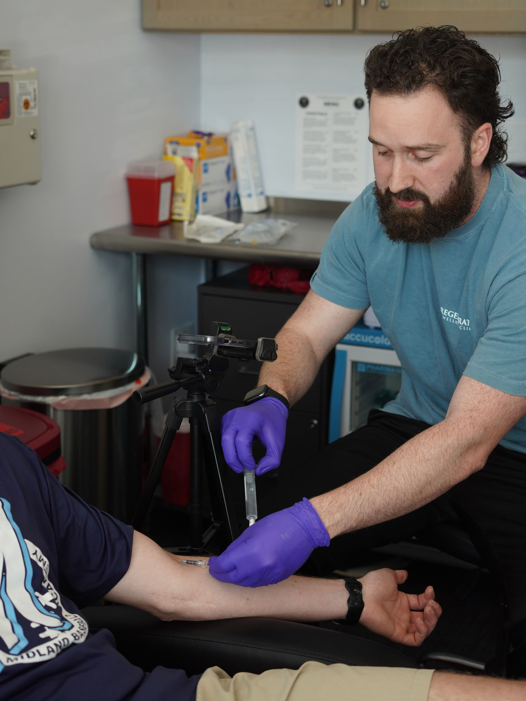
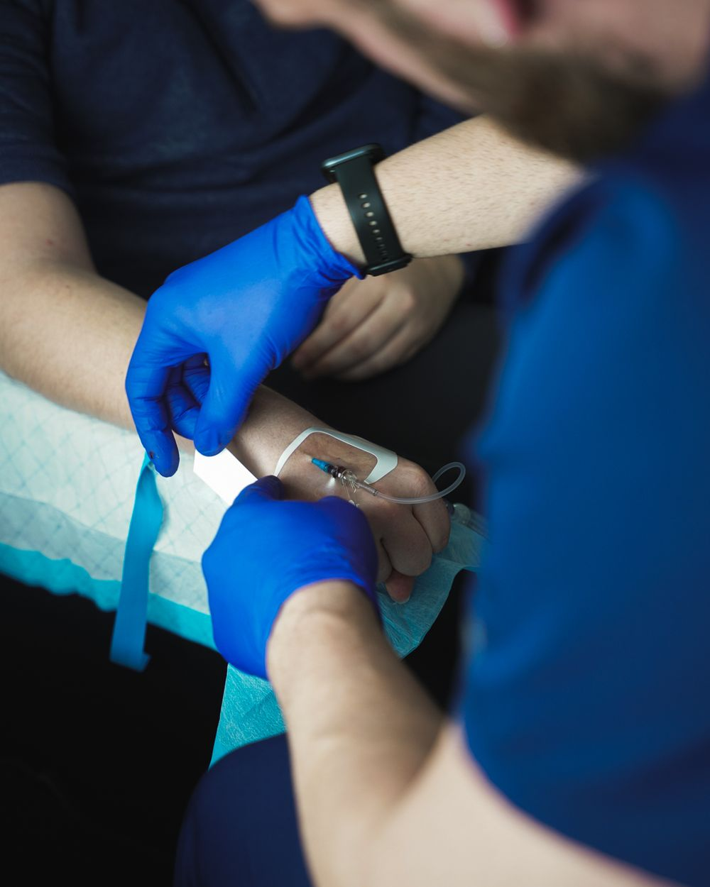

Full-body panels
Comprehensive metabolic, blood count, lipids, thyroid, inflammation, and nutrient markers in one draw.

Lab Testing & Bloodwork
Comprehensive full-body and hormone panels that turn how you feel into data, and data into a plan. Voorhees, NJ.

The front doorAsylum Wellness & IV
How you feel is real, but it is not data. Comprehensive lab testing turns fatigue, weight changes, poor sleep, and low drive into numbers we can actually work with.
Your labs are the foundation of every IV, injection, supplement, and coaching decision at Asylum.
What we test
Comprehensive metabolic, blood count, lipids, thyroid, inflammation, and nutrient markers in one draw.
Testosterone, estrogen, cortisol, and thyroid testing for both performance and 40+ optimization.
We sit down and explain what your numbers mean and exactly what to do next.
Why it matters
A full-body checkup gives you a baseline and a direction. Maybe your fatigue has a root cause your bloodwork can reveal. Maybe your energy or drive needs a second look. Maybe everything looks great and we focus on performance. Either way, you stop guessing and start optimizing.
Questions
Lab testing is highly customizable to you. Rather than a fixed menu, we build your panel around your goals and current health status with our lab partner, Access Medical Labs.
Typically $150 to $500 depending on panel depth, itemized into the lab panel cost and a separate interpretation and processing fee, which is required under New Jersey rules.
You reach out with a general inquiry. We send a short health questionnaire about your goals and current health status. Based on your answers, our Wellness & IV team suggests a few panel options, and consent forms go out in the same email. Once you choose a panel, our nurse practitioner writes the lab script and we schedule your blood draw. Labs are sent to Access Medical Labs.
3 to 7 business days, depending on the markers tested and your draw day.
A basic interpretation from our nurse practitioner, with guidance on next steps if anything is out of range.
Yes. Our in-depth lab review is available as an additional service, at an additional cost, for clients who want to walk through their results in more detail with our team.
No. Asylum operates on a 100% cash-pay basis; insurance is not accepted for any service.
Some panels require fasting. Once you have selected your panel, our team will let you know if fasting is required and send email instructions on exactly how to prepare.
How labs work here
Asylum is not a primary care provider. What we offer is the lab draw itself, processed through our primary lab partner, Access Medical Labs. An in-depth review of your results is a separate service, meant to inform your plan, and it does not replace your primary care physician.

Book a full-body or hormone panel and finally see what is going on under the hood.